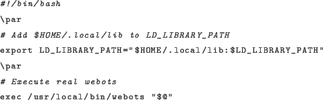

Next: Specifying the master Up: Distributing Jobs Previous: Running on the biorob Contents
LD_LIBRARY_PATH in the environment settings of the dispatcher.
Note: The dispatchers will not be executing under your normal login
environment! This means that if you do anything special in your /.bashrc
(or similar) you will not have the same environment for the job.
It is possible that LD_LIBRARY_PATH does not get set properly when specified
in the environment settings of the dispatcher due to security reasons. If
this is the case, a simple workaround is to create a wrapper script which sets
LD_LIBRARY_PATH and then executes the actual dispatcher. For example,
to do this for webots, create a script at ~/bin/webots-runner:

And specify $HOME/bin/webots-runner in the webotsPath dispatcher
setting of the webots dispatcher (in the job file).